Palworld MOD安装教程
Palworld MOD安装教程1、MOD下载网站（N网）2、Vortex MOD管理器安装教程1.下载Vortex2.汉化Vortex3、使用Vortex安装MOD1.登录Vortex2.安装Palworld Vortex Extension扩展3.安装MOD4.安装UE4SS
Vortex演示版本： 1.9.12 汉化演示版本：1.9.13 幻兽帕鲁扩展演示版本：0.1.7 MOD演示编号：336 UE4SS：3.0.1
因国内网络问题，Nexus mods、GitHub可能无法访问。
可使用 Watt Toolkit「原名 Steam++」 加速网页。
1、MOD下载网站（N网）
因网站限制，必须登录才能下载文件。
2、Vortex MOD管理器安装教程
方便后续安装更多MOD和管理MOD。
1.下载Vortex
下载地址：https://www.nexusmods.com/about/vortex
登录地址：https://users.nexusmods.com
注册地址：https://users.nexusmods.com/register
如不常下载或不想使用自己的邮箱，可使用 Temp Mail - 临时邮件 或其他匿名邮箱。

点击 Download the latest version now 。
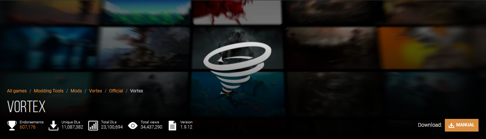
点击右下角 MANUAL 。

点击 DOWNLOAD ，前置可以不必理会，缺失会自动下载补齐。

点击 SLOW DOWNLOAD ，等待五秒后会自动下载。下载完成后安装Vortex，安装过程不再赘述。
2.汉化Vortex
下载地址：https://www.nexusmods.com/site/mods/29
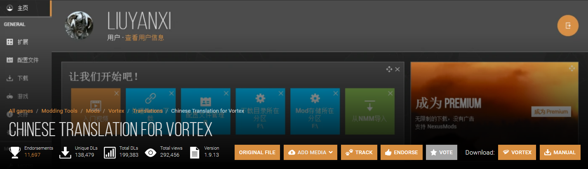
点击右下角 MANUAL 下载。
下载完成自行解压。
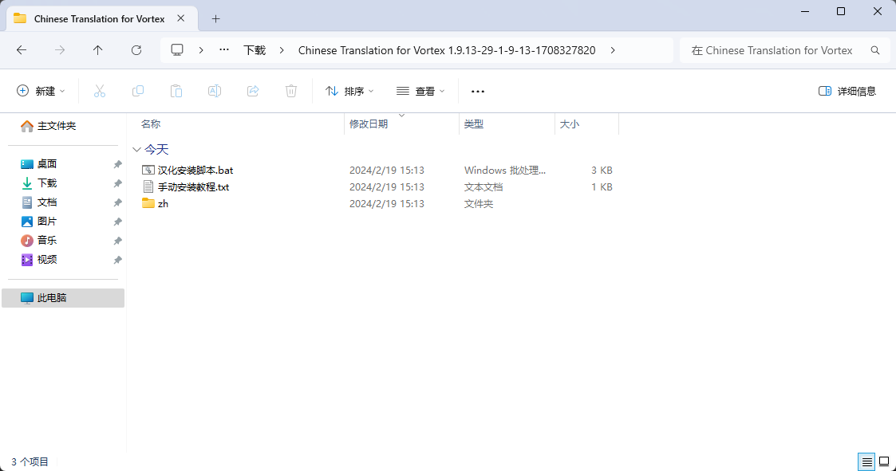
双击 汉化安装脚本 ，按照提示完成汉化。完成后，重新打开Vortex。

若弹出此界面，点击 Fix 会自动下载.NET6。

下载完成后点击 Open 。
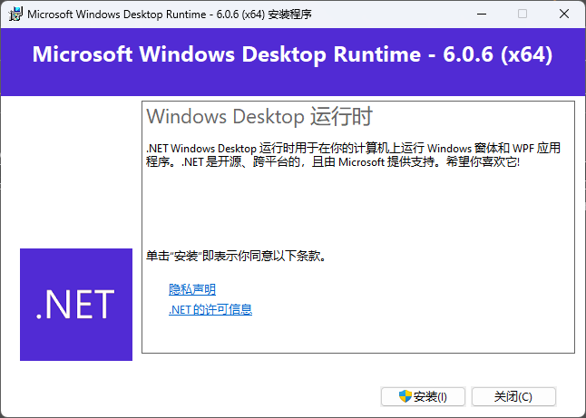
点击 安装 。
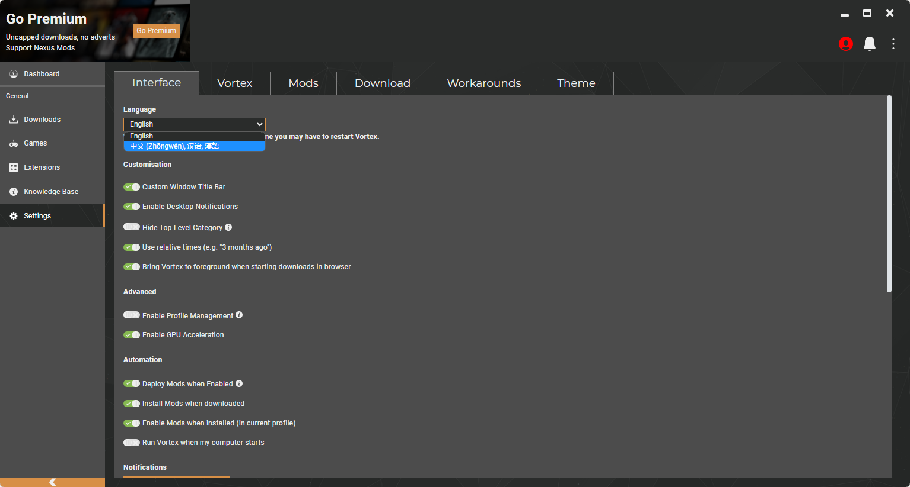
点击左侧 Settings ，找到 Language ，选择 中文(zhōng wén),汉语,漢語 ，完成后重启Vortex以便完全汉化。
3、使用Vortex安装MOD
1.登录Vortex
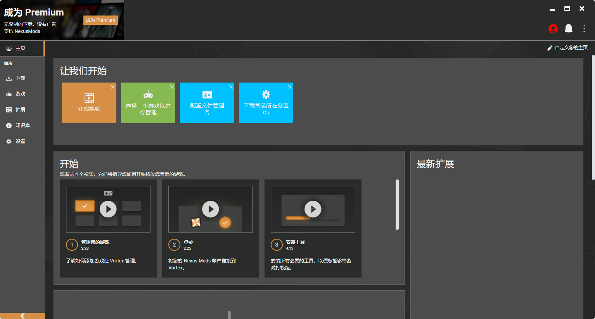
点击右上角红色头像。
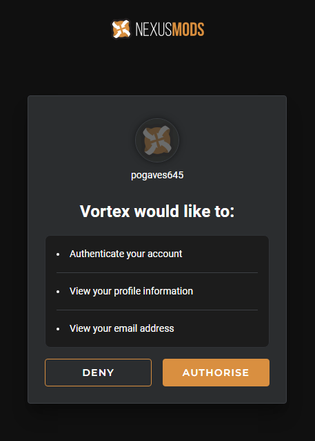
在弹出网页页面点击 Authorise 。

点击 Log in to Vortex 。
等待一段时间，如没有反应，再重复以上步骤。

2.安装Palworld Vortex Extension扩展
扩展链接：https://www.nexusmods.com/site/mods/770
下载链接：https://www.nexusmods.com/site/mods/770?tab=files&file_id=2779
下载方法同上（使用手动下载）。
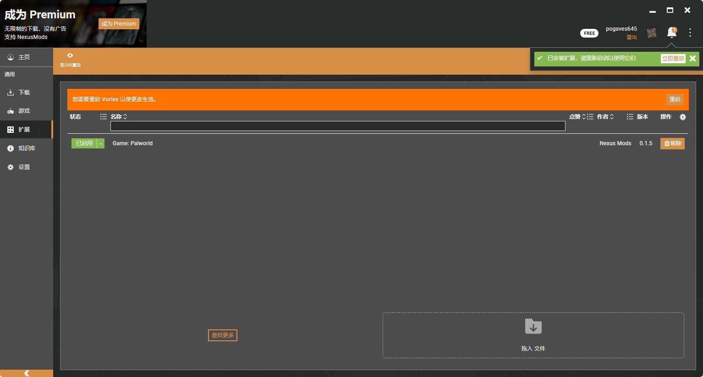
下载完成将下载的 Palworld Vortex Extension-770-0-1-7-1708434866.zip 拖动到右下角 拖入文件 ，安装完成后点击重启。
无法拖入可手动安装。
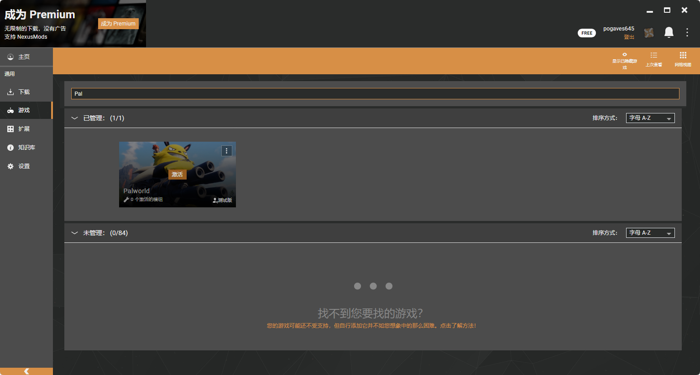
找到 游戏 - Palworld - 点击管理或激活 。完成后重启Vortex。
正常会自动搜索到游戏路径。如没有安装，则必须手动设置游戏路径。
3.安装MOD
Pal Analyzer 下载地址：https://www.nexusmods.com/palworld/mods/336
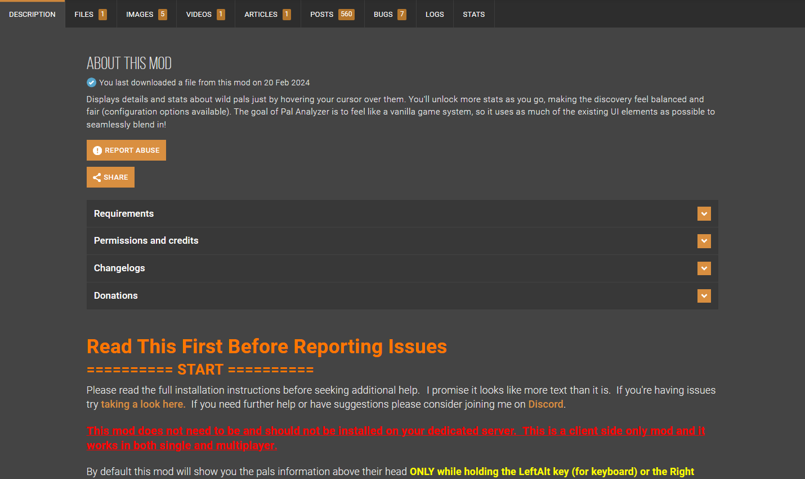

DESCRIPTION 为描述内容，可使用浏览器自带翻译或其他翻译扩展。
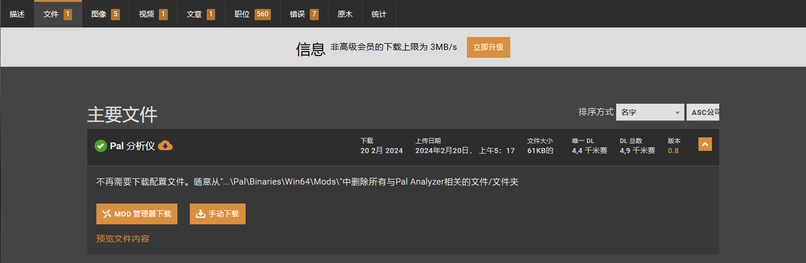
点击左侧 模组管理器下载 。
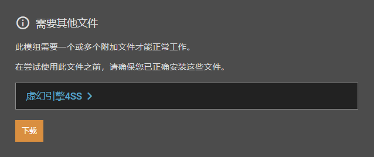
点击 下载 。

点击 下载缓慢 。

点击 打开Vortex 。
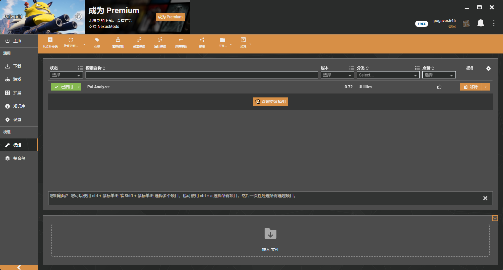
下载完成后会自动安装部署。
4.安装UE4SS
如未自动安装UE4SS，则需手动下载安装。如已自动安装请忽略。
安装方法一：手动下载安装
下载地址：https://github.com/UE4SS-RE/RE-UE4SS/releases
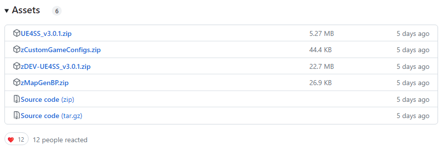
选择： zDEV-UE4SS_v3.0.1.zip 或其他版本。
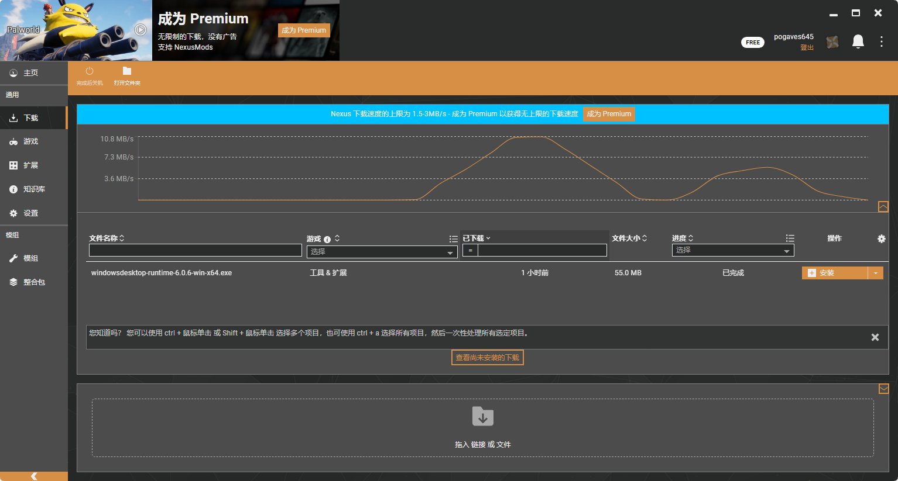
下载完成后将 zDEV-UE4SS_v3.0.1.zip 拖入。
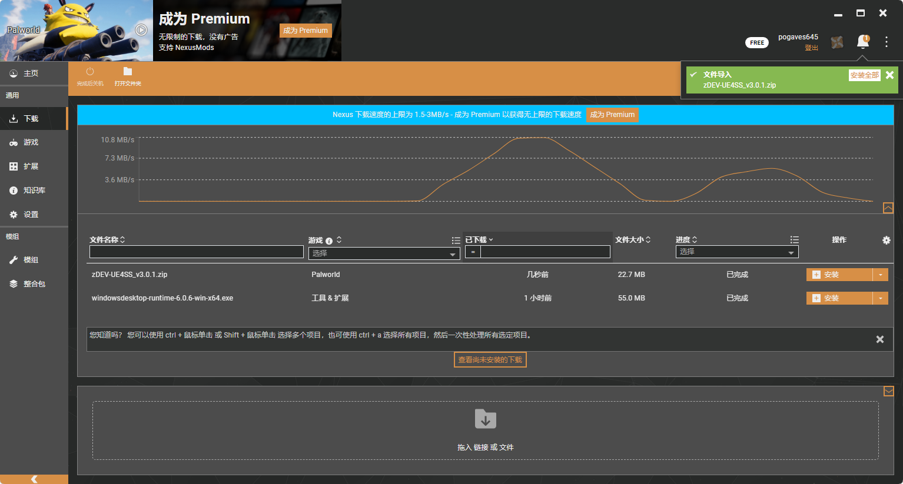
点击 安装全部 。
方法二：手动下载自动安装

点击 输入链接 。
https://github.com/UE4SS-RE/RE-UE4SS/releases/download/v3.0.1/zDEV-UE4SS_v3.0.1.zip
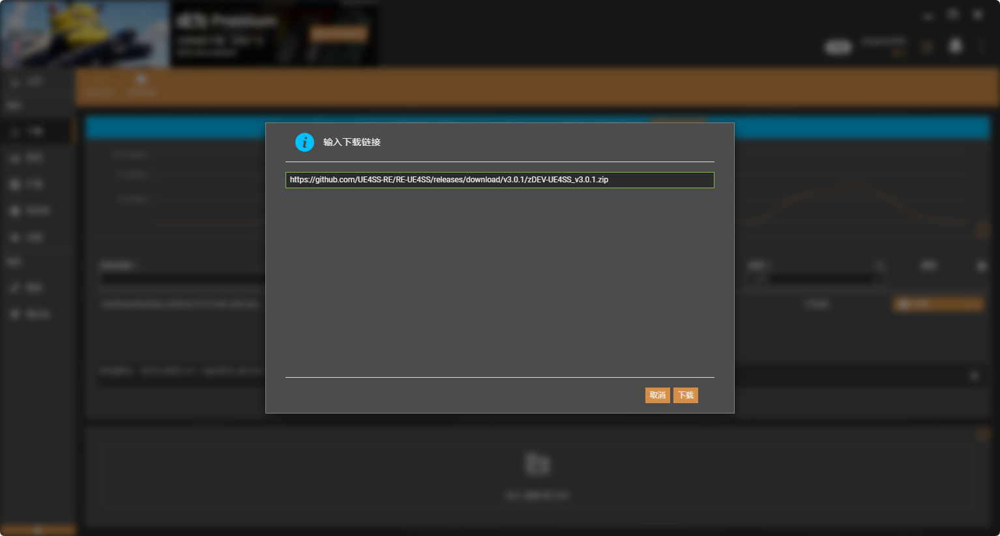
点击 下载 。
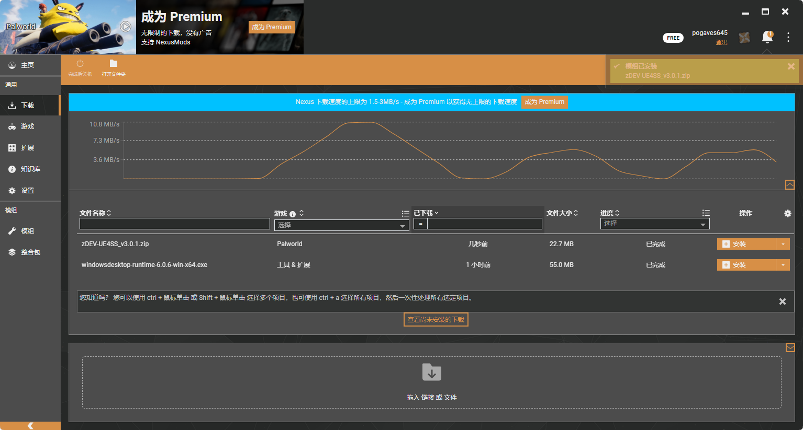
等待自动安装完成。
Steam 上的 Palworld / 幻兽帕鲁 (steampowered.com)
Palworld Nexus 的模组 - 模组和社区 (nexusmods.com)
欢迎来到 Steam (steampowered.com) 或 https://s.team
别再搞错“盗版、假冒”等错误网站了。
Palworld幻兽帕鲁的个人空间-Palworld幻兽帕鲁个人主页-哔哩哔哩视频 (bilibili.com)
编写于：2024年02月19日 -- 修订于：2024年02月21日